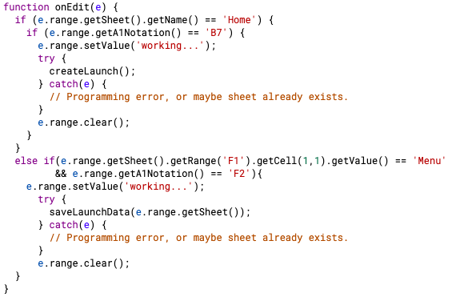
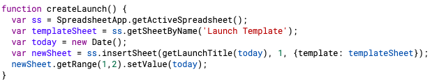
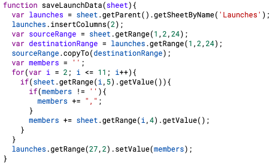

I created Rocketsheet to make recording and analyzing launch data easier. Rocketsheet is quick to learn and simple to navigate. Gone are the days of flipping through endless pages of data sheets, now you and your team can view all launches or just one with the click of a button.
There are two functions on the script editor, one that will create a new launch sheet and another that will save the launch data and paste it into the 'Launches' spreadsheet.
 
The method onEdit(e) will first check to see if the sheet that was edited was the 'Home' sheet. If so, the method will check to see if the cell that was edited is the menu cell, or B7. If that is also true, the method will then set the value in the cell to the text "working..." and will call the method createLaunch(). The method createLaunch() sets up a new spreadsheet using the Launch Template and sets the date to the current day. Once the method createLaunch() is done, the script will go back to onEdit(e) and will clear the menu cell so that once again it is empty.

However, if the spreadsheet edited was not the 'Home' spreadsheet, the script will instead check to see if the spreadsheet edited has a cell on F1 with the text "Menu". If true, the script will then call the saveLaunchData(sheet) method. saveLaunchData(sheet) uses the passed in sheet to insert a column into the 'Launches' spreadsheet, where it will then copy over the data that was inputed into the launch data sheet. The for loop will take all the member's names and put them into a comma separated list.
If you want to add or remove the number of data entries in your Launch Template, do so on the Google spreadsheet, then go to your script editor and adjust the range that saveLaunchData(sheet) will copy to make the transfer of data from the individual launches to the 'Launches' spreadsheet accurate. More specifically, change the var sourceRange and destinationRange to get the correct range of data entries.
The first step I took to begin creating the Rocket Spreadsheet was to get all my ideas out of my head and onto paper. I decided to use my iPad so that I could both type up notes and also draw diagrams.

This is what the paper launch sheet looked like. It took a long time to write out each data entry, especially with cold hands that couldn't hold a pencil very well. In addition, there were moments where a team member's handwriting was not the best, resulting in data that couldn't be read.

I decided to first convert the paper version into a list on a spreadsheet. The paper version acted as a guide for what data entries I wanted. I also added some more entries that I thought would be helpful to keep track of.

Once I had the initial data entries down, I added empty cells in between certain entries to make it easier to read.